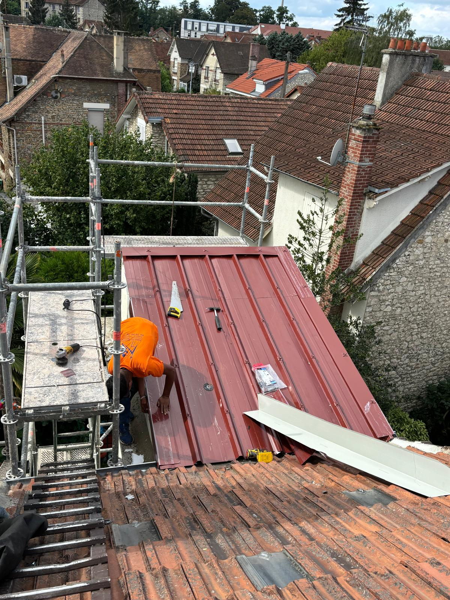

Guide d'Entretien de Toiture à Sully-sur-Loire

L'entretien régulier de votre toiture est crucial pour sa longévité et son efficacité. Dans cet article, nous vous fournirons des conseils pratiques pour garder votre toiture en parfait état.
1. Vérifiez régulièrement l'état de votre toiture
Inspectez votre toiture au moins une fois par an. Recherchez des signes d'usure, des tuiles manquantes, ou des infiltrations d'eau. Une détection précoce peut vous éviter des réparations coûteuses.
2. Nettoyez vos gouttières
Des gouttières obstruées peuvent entraîner des dommages importants à votre toiture. Assurez-vous qu'elles sont nettoyées et dégagées de tous débris. Cela facilitera l'écoulement de l'eau de pluie et préviendra les infiltrations.
3. Effectuez un démoussage régulier
Les mousses et lichens peuvent endommager votre toiture. Planifiez un démoussage régulier pour maintenir la santé de votre toiture. Cela contribuera également à améliorer l'esthétique de votre maison.
4. Réparez immédiatement les fuites
Ne laissez pas une petite fuite se transformer en problème majeur. Si vous détectez une infiltration, faites appel à un professionnel dès que possible pour éviter des dégâts supplémentaires.
5. Faites appel à des professionnels pour un entretien approfondi
Pour garantir un entretien de qualité, n'hésitez pas à faire appel à des experts en toiture. Chez JCD Rénovation, nous proposons des services d'entretien complets pour assurer la durabilité de votre toiture.
Mots-clés : entretien toiture, conseils toiture, nettoyage gouttières, démoussage, Sully-sur-Loire, JCD Rénovation.